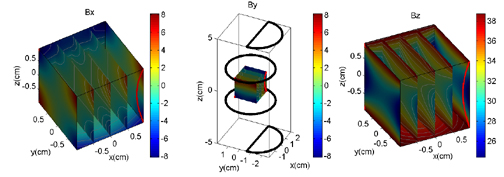

A generic Field calculator
|
Here is an example that goes through BOTH how to add a new coil function to the registration list, and how to use MultiBiot to calculate fields.
The type added here is a D-circle (a circle with a flatten side like a 'D'). The code for this example is long becuase the 'Dcircle' function is quite involved.
Below is the data as generated by the program plotted by plotmag found in the matlabfunc directory of the distribution.

|
//***Here is an example input file
--------------------input.sim-----------------------
MyCoil{
subcoil1{
type helmholtz
loops 25
amps -4
numpts 4000
R 4
length 3
axis z
}
subcoil2{
type Dcircle
loops 1
amps 2
numpts 2000
R 2
#start theta of line section
theta1 0
theta2 180
axis x
center 0,-.6,5
}
subcoil3{
type Dcircle
loops 1
amps 2
numpts 2000
R 2
#start theta of line section
theta1 0
theta2 180
axis x
center 0,-.6,-5
}
}
# Cube
grid{
min -1,-1,-1
max 1,1,1
dim 20,20,20
}
params{
#which magnetic field section to use
section MyCoil
#output text file name
textout shape.biot
#output matlab file name
matout field.mat
}
--------------------input.sim-----------------------
#include "blochlib.h"
//the required 2 namespaces
using namespace BlochLib;
using namespace std;
//***** THE D_CIRCLE BIOT FUNCTION****
//the D circle (or 'D') is basically a cirlce with a flattened surface
// from theta=theta1...theta2
void Biot_Dcircle(Parameters &pset, Vector<Vector<coord<> > > &Coil)
{
int i;
double R=pset.getParamD("R");
double theta1=pset.getParamD("theta1")*PI/180.0;
double theta2=pset.getParamD("theta2")*PI/180.0;
double startTH=pset.getParamD("startTheta", "", false, 0)*PI/180.0;
double endTH=pset.getParamD("endTheta", "", false, 0)*PI/180.0;
theta1=fmod(theta1, PI2);
startTH=fmod(startTH, PI2);
theta2=fmod(theta2, PI2);
if(theta1>theta2) swap_(theta1, theta2);
int numpts=pset.getParamI("numpts");
char axis=pset.getParamC("axis", "", false, 'z');
coord<> center=pset.getParamCoordD("center", "", ',',false);
double angle=2.0*PI/double((numpts-1));
Coil.resize(1, Vector<coord<> >(numpts,0.0));
double curang=startTH, endAng=0.0;
bool got1=false, got2=false, runline=false, ToAdd=true;
int linect=0, onPt=0;
coord<> begin, end, div, ston;
for (i=0;i<numpts;i++){
//number of points we've calculated
// if(curang>=startTH && curang<fmod(angle+startTH,PI2))
//our angle is within the part we want a line from
if(curang>=theta1 && curang<theta2)
{
//we just got here so snage the begining point
if(!got1)
{
got1=true; //did the first point
got2=false; //not found the last point
//do NOT caluclated the line until we get the end point
runline=false;
linect=0; //restart the line counter
switch(axis)
{
case 'x': begin(0.0,
R*sin(curang),
R*cos(curang));
break;
case 'y': begin(R*cos(curang),
0.0,
R*sin(curang));
break;
default: begin(R*cos(curang),
R*sin(curang),
0.0);
break;
}
}
linect++;
ToAdd=false; //do not add an cylider bits
}
//found the upper bound
if(got1 && !got2 && curang>=theta2)
{
got2=true; //found the end
runline=true; //now calc the line
//grab the end point
endAng=curang;
switch(axis)
{
case 'x': end(0.0,
R*sin(curang),
R*cos(curang));
break;
case 'y': end(R*cos(curang),
0.0,
R*sin(curang));
break;
default: end(R*cos(curang),
R*sin(curang),
0.0);
break;
}
ston=begin+center;
onPt=i;
div=(end-begin)/double(linect);
}
//add the helix part if we can
if(ToAdd){
switch(axis){
case 'x':
Coil[0][i][0]=0.0;
Coil[0][i][1]=R*sin(curang);
Coil[0][i][2]=R*cos(curang);
break;
case 'y':
Coil[0][i][0]=R*cos(curang);
Coil[0][i][1]=0.0;
Coil[0][i][2]=R*sin(curang);
break;
case 'z':
default:
Coil[0][i][0]=R*cos(curang);
Coil[0][i][1]=R*sin(curang);
Coil[0][i][2]=0.0;
break;
}
Coil[0][i]+=center;
}
//calc the line if we can
if(runline)
{
for(int j=onPt-linect;j<onPt+1;++j){
if(j>=numpts) break;
Coil[0][j][0]=ston.x();
Coil[0][j][1]=ston.y();
Coil[0][j][2]=ston.z();
ston+=div;
}
curang=endAng; //start angle where we ended
runline=false; //no more line
got1=false; //reset the gts flags
got2=false;
ToAdd=true; //now we can add the helix part again
}
//stay within 2Pi
curang=fmod(curang+angle+startTH,PI2);
}
std::cout<<"D-shape along "<<axis<<" axis with radius "<<R<<" cm "<<std::endl;
}
//****** MAIN *****
int main(int argc, char **argv)
{
MPIworld.start(argc, argv);
//add our new function to the list
BiotFunctions.insert("Dcircle", Biot_Dcircle);
std::string parse="";
int q=1;
if(MPIworld.master())
query_parameter(argc, argv, q++, "input file name:", parse);
//let ever node know about it
MPIworld.scatter(parse);
//creat a Parameter
Parameters pset(parse);
pset.addSection("params");
//the desired MultiCoil section to use
std::string choose=pset.getParamS("section", "params");
//get the grid info
typedef XYZshape<XYZfull> TheGrid;
pset.addSection("grid");
Grid<UniformGrid> g1(pset.getParamCoordD("min", "grid"),
pset.getParamCoordD("max", "grid"),
pset.getParamCoordI("dim", "grid"));
TheGrid g2(g1, XYZfull());
//our master MultiBiot object
MultiBiot<TheGrid> mycoil(g2,pset, choose);
mycoil.Controller=MPIworld;
//calc the field
mycoil.calculateField();
//dump out the data
if(MPIworld.master()){
mycoil.writeMatlab(pset.getParamS("matout", "params", false, "field.mat"));
mycoil.write(pset.getParamS("textout", "params", false, "shape.boit"));
}
MPIworld.end();
}
|
|